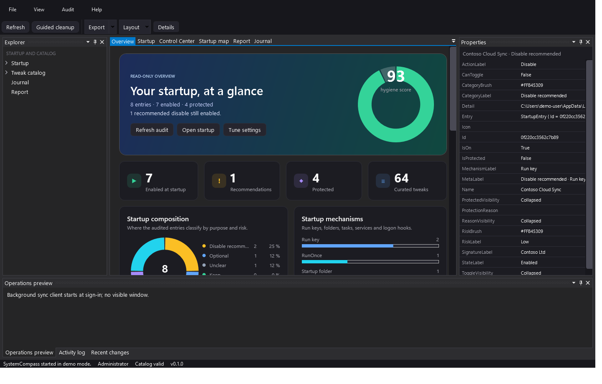
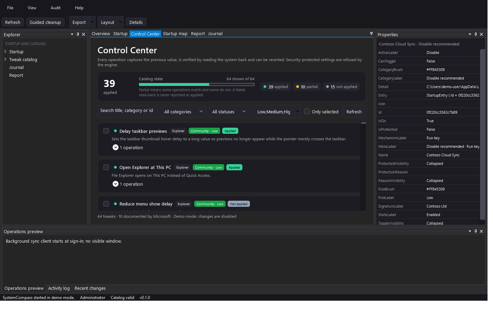

Windows / .NET 10 / WPF
SystemCompass
Read-only-first startup auditing for Windows. Every change is verified, journaled and reversible.
Open source / local-first / Windows and coding agents
Utilities that make local state visible and changes reversible. SystemCompass audits Windows startup. claude-code-bridge connects coding-agent sessions across machines over SSH.

Windows / .NET 10 / WPF
Read-only-first startup auditing for Windows. Every change is verified, journaled and reversible.
stdio / ssh / remote agent
$ uvx --from claude-code-bridge-mcp==1.0.0 cc-peerMCP over stdio. Resumable conversations. Built-in self-test.
Python / MCP / SSH
An MCP server that lets coding-agent sessions on different machines message each other over plain SSH.
Windows startup audit
SystemCompass inventories the startup mechanisms Windows actually exposes - Run and RunOnce keys, Startup folders, scheduled tasks, automatic services and Winlogon hooks - then explains each entry by category, risk, signer and recovery advice.

git clone https://github.com/Rutyro/SystemCompass.git
cd SystemCompass
dotnet run --project src/SystemCompass.App -c Release -- --demoRequires the .NET 10 SDK. Demo mode uses fictional data and refuses writes.
MCP over SSH
Let one coding-agent session message another machine's session over SSH. No cloud relay, no shared account.
The server runs locally as an MCP process. When you send a message, it runs ssh <peer> <command> -p --resume <session-id> and pipes the message to stdin. The remote session's stdout is the reply.
Session ids are stored per peer in a small state file. If the remote conversation is provably gone, the bridge retries once with a fresh session. A network error never resets the stored history.
agent (host) > stdio > cc_peer.py > ssh > agent -p (remote)The remote session continues across calls. Only a provably stale session is replaced.
Timeouts and unreachable hosts are returned as errors without touching the stored session.
Correct quoting for POSIX and Windows peers. SSH binary fallbacks for common Windows installs.
Python standard library only. The self-test runs with a single command.
Requires Python 3.11+, the same agent CLI on both machines, and SSH key auth to the peer.
Install it, or run it directly with uvx:
$ pipx install claude-code-bridge-mcp==1.0.0
# or
$ uvx --from claude-code-bridge-mcp==1.0.0 cc-peerCreate ~/.cc-peer.json:
{
"peers": {
"my-server": {
"ssh": "my-server",
"shell": "sh",
"cwd": "",
"command": "agent",
"args": [],
"ssh_args": ["-o", "BatchMode=yes", "-o", "ConnectTimeout=10"],
"timeout": 600
}
}
}Register the server with your MCP client:
{
"mcpServers": {
"cc-peer": {
"command": "uvx",
"args": ["--from", "claude-code-bridge-mcp==1.0.0", "cc-peer"]
}
}
}Then call list_peers() and send_message(peer="my-server", message="...").
BatchMode=yes. The bridge never handles passwords and stores no secrets.